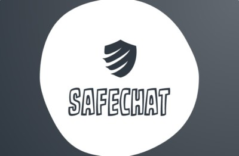

Here are some of the projects I've worked on!
- Automated Employee List Generation in Google Cloud
- Completed as part of my internship with Sabre Corporation in Summer 2023
- Used the Google Cloud Platform, specifically Cloud Functions and Cloud Storage
- Wrote python code for database access and SQL for database queries
- Compiled SQL query results into a csv file and wrote to cloud storage
- Used terraform to schedule the cloud function to run daily
- Learned how to deploy code using terraform and jenkins
- Unit Testing for Python and PHP applications
- Completed as part of my internship with Sabre Corporation in Summer 2023
- Used the phpunit framework for PHP unit test automation and the pytest framework for python unit test automation
- Learned how to use mocking to test functions and classes with dependencies in both python and PHP
- Web Based Point-of-Sale System for Boba Tea Shop
- Website
- Developed a web application to handle customer, cashier and manager operations for a Boba Tea shop
- Created a GUI using Next.js for ordering items and managing restaurant information, such as inventory and sales data
- Designed and created a PostgreSQL database of five restaurant entities
- Wrote backend REST API calls to PostgreSQL database using Python Flask
- "Safechat" Content Moderation Discord Bot using Natural Language Processing
- Demo Website
- Competition Page
- Completed during the TAMU Datathon in 2022
- Used a Natural Language Processing model from Cohere to determine text toxicity
- Trained the model using publicly available data, primarily including twitter posts
- Deleted sent messages based on a threshold toxicity level
- Wrote a website using streamlit to showcase our project and provide an embedded demo
- Won "Best Use of Natural Language Processing by Cohere" at the TAMU Datathon
- Science Olympiad Detector Building Event
- Built a temperature sensing device using an Arduino as well as various electrical components, including a breadboard and a thermistor
- Wrote Arduino code to calculate temperature using voltage input and a thermistor equation
- Calibrated the device experimentally using water at various temperatures
- Maintained a temperature accuracy to within three degrees fahrenheit
- Developed skills in electrical engineering, including soldering and circuitry
- Java PONG game
- Developed a 2-D game of Pong using Java Object-Oriented Programming Principles
- Supported two players using keyboard input to control their own paddle
